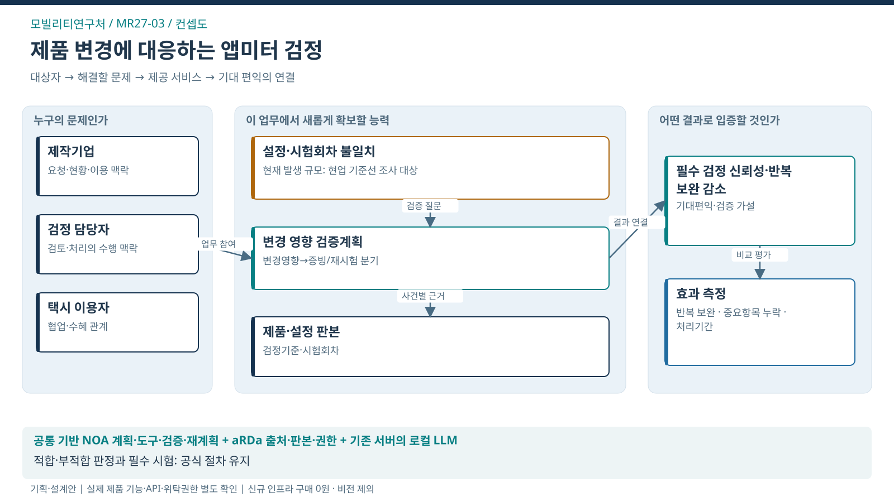
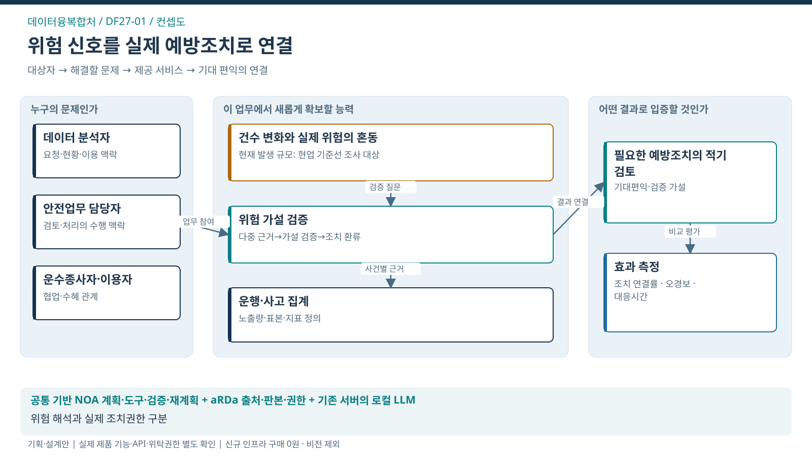
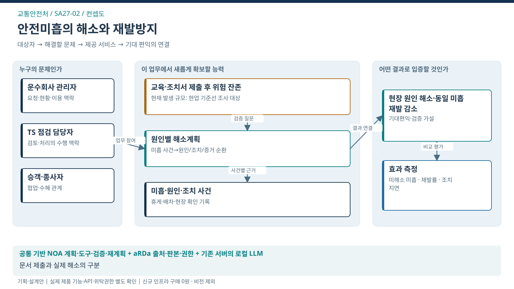
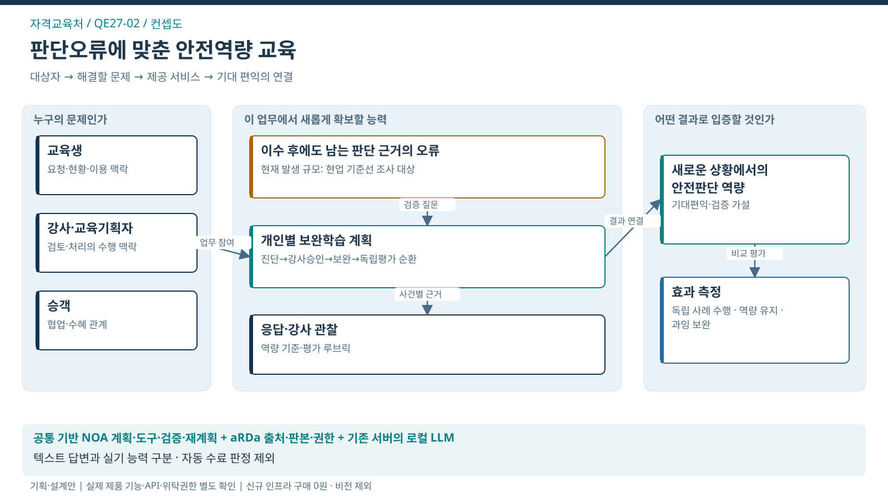
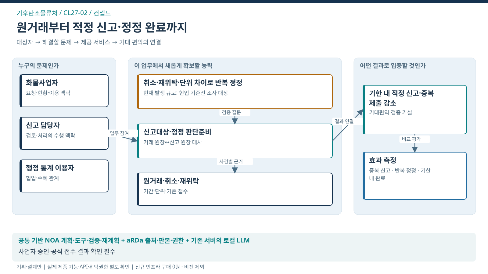
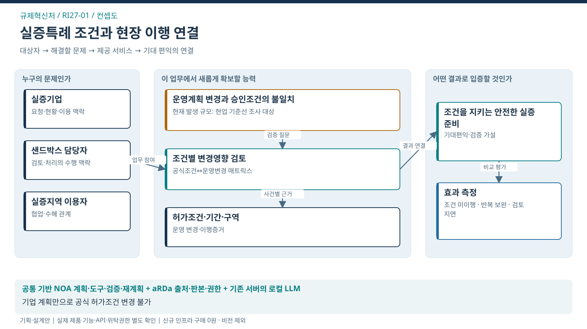

AX SERVICES
업무의 변화가
국민의 편익으로.
현재 상세기획 13개 처의 대표서비스. 문제와 목표를 확인하고 컨셉·흐름·구조로 탐색.

모빌리티연구처
제품 변경에 대응하는 앱미터 검증계획
택시 이용자·앱미터 제작기업
서비스 살펴보기 ↗
데이터융복합처
교통위험 해석에서 예방조치까지 연결
운수종사자·교통 이용자
서비스 살펴보기 ↗
교통안전처
안전미흡의 실제 해소와 재발방지
운수종사자·승객·도로 이용자
서비스 살펴보기 ↗
자격교육처
학습자의 판단에 맞추는 안전역량 교육
사업용 운전자·승객
서비스 살펴보기 ↗
기후탄소물류처
실제 거래에서 신고·정정 완료까지
화물운송사업자·행정 통계 이용자
서비스 살펴보기 ↗
정책지원처
필수 이동의 미충족을 줄이는 정책 실행
고령자·교통약자·필수 이동이 어려운 주민
서비스 살펴보기 ↗
규제혁신처
실증특례 조건을 실제 이행으로 연결
실증기업·실증지역 이용자
서비스 살펴보기 ↗
실증사업처
단지내도로 개선의 실행·효과 확인
단지·대학 등의 보행자·교통약자
서비스 살펴보기 ↗전환 방향·기대편익은 제안 가설이며, 실현효과·제품 적용버전·권한·기준선은 현업 검증 대상. 전체 제안 근거·제품·효과 비교 ↗